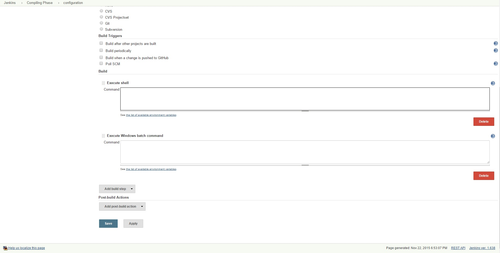

Finally, we need to deploy, for this you can choose either a plugin or a command line interface. For example, using the Google App Engine command line interface. With a new job, which you kick off from the end of the testing phase, you will need to use "gcloud preview app deploy DIRECTORY/app.yaml". This step varies depending on how you have everything setup but the easiest method is to keep the directory in a known place and move to that directory when you do your builds and tests. 